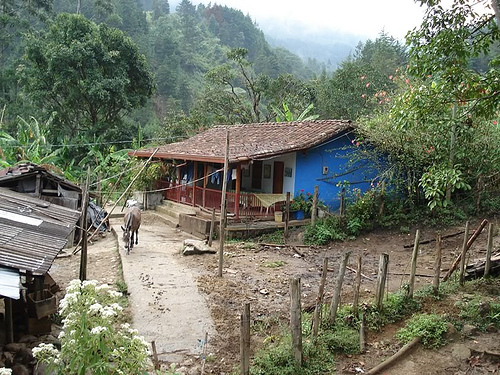
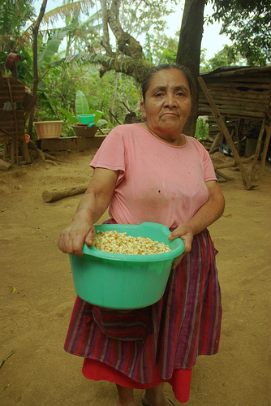

La finca agrícola
La modernización de la agricultura y su integración en el mercado internacional ha llevado a una transformación radical en los modos de producción tradicionales. El modelo de producción agrícola dominante en el marco de la internacionalización neoliberal de la economía ha promovido cambios a la agricultura. Por ejemplo, para la internacionalización de la agricultura se ha impuesto una agricultura intensiva, con alta mecanización, es decir, aplicar el uso de máquinas, y el uso masivo de productos químicos, más ajustados a los modelos industriales y empresariales competitivos para una economía de mercado. En este proceso de transformación de la agricultura tradicional a industrial, se ha producido una apropiación masculina de la producción agraria. 
Con la modernización de la agricultura y su mecanización, los hombres asumen el protagonismo como trabajadores y empresarios agrarios, mientras las mujeres asumen una posición social subsidiaria, es decir de dependencia, como ‘mujeres de’ o ‘hijas de’. Mientras las mujeres se ocupan de lo doméstico, los hombres se ocuparán de la producción destinada al comercio, transformando la actividad productiva en dinero.
La modernización de la agricultura, incluyendo la llamada ‘revolución verde’, ha marcado-como dice Rosario Sampredro- las pautas de disociación entre «el espacio de lo productivo (conectado con el mercado, y por tanto fuente de poder, prestigio, autonomía, de existencia social) y el espacio reproductivo (espacio del trabajo no mercantil, gratuito, inmensurable al no ser intercambiado, sin existencia social)».
Por otro lado, en los trabajos agrarios familiares el proceso de modernización se ve limitado o condicionado por las disponibilidades económicas, es decir, a la cantidad de dinero o medio que se tiene. Así, en la mayoría de los trabajos agrarios familiares se da una modernización ‘a medias’: hay incorporación de maquinaria agrícola y de tecnología, pero, en el esfuerzo de adaptación a la economía de mercado y de garantizar la supervivencia, no se puede prescindir de la mano de obra familiar. En este ámbito, mientras los hombres se desarrollan como productores y pequeños empresarios agrarios, las mujeres tienden a asumir los roles tradicionales de género y con esto la exclusividad en las tareas del espacio reproductivo (del trabajo gratuito), pero sin abandonar realmente las tareas productivas (de producción). El papel de la mujer en las tareas productivas queda limitado al calificativo de ‘ayuda familiar agraria’, sin relevancia social, trabajando como mano de obra invisible.
En la agricultura familiar, la organización de los procesos productivos en base a las relaciones familiares hace más difícil la separación entre las esferas productiva y doméstica. La estructura familiar se diferencia de otras estructuras sociales por:
- la conexión entre relaciones económicas y afectivas
- la jerarquización de las relaciones entre hombres y mujeres
- la jerarquización entre adultos, jóvenes y niños/a
El padre de familia es la figura que, directa o indirectamente, ocupa el lugar central de poder en la toma de decisiones y en el control de los recursos. 
Las mujeres se ocupan de la ‘ayuda familiar’ en las explotaciones agropecuarias y ven cómo su trabajo se considera una continuación de las tareas domésticas, sin el reconocimiento como actividad laboral o productiva. Según un estudio realizado por Vera y Rivera (1999), el 70,6% de las mujeres que viven en explotaciones agropecuarias trabajan o ayudan en las labores productivas. «Ni siquiera el que haya hijos conviviendo en el hogar, parece ser relevante respecto a no trabajar o no ayudar. Cuando hay un negocio familiar, las mujeres trabajan en el negocio, sin distinción por subgrupos o segmentos de edad». Con datos publicados en el Anuario sobre la Agricultura Familiar en España 2009, en el año 2005 sólo el 21,21% de los titulares jefes de explotación son mujeres.
La doble jornada
El trabajo doméstico incluye diversas tareas, por lo que puede no ser visible y tener poca consideración social. Por ejemplo, el trabajo doméstico no tiene una jornada delimitada de tiempo. Por el contrario, el trabajo doméstico se extiende indefinidamente durante todo el día y todos los días del año. Al no ser un trabajo remunerado, además de no proporcionar derechos laborales, tampoco hay una valoración cuantificable del cansancio, dedicación, esfuerzo y habilidades que implica. «El diario de las mujeres rurales está marcado por una situación de trabajo permanente y continua, con gran diversidad de tareas, que incluyen la reproducción de la familia y, así la reproducción de la fuerza de trabajo necesaria a las actividades productivas» (Silva y Portella, 2006, p. 135).
Lo que actualmente se llama ‘doble jornada’ o ‘doble presencia’, se refiere a dos jornadas de trabajo: una de trabajo reproductivo (incluyendo las tareas domésticas y de cuidados de las personas dependientes, y otra de trabajo productivo (generando bienes y servicios destinados al mercado).
La doble jornada no es una característica específica del trabajo femenino agrario, también las mujeres asalariadas y empresarias llevan una doble jornada, ocupándose del trabajo doméstico y del trabajo profesional. Sin embargo, el trabajo que realizan las mujeres empresarias fuera del hogar tiene una remuneración económica y una delimitación y reconocimiento social distintos al trabajo doméstico. En el caso de las mujeres agricultoras, el trabajo agrario no es visible porque es considerado parte del trabajo doméstico y no es remunerado, es decir, las labores son parte de la familia y para la familia.